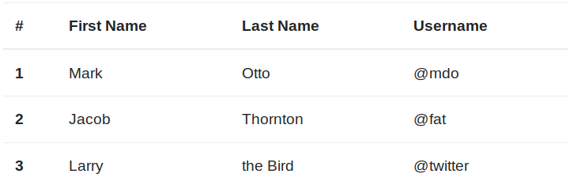
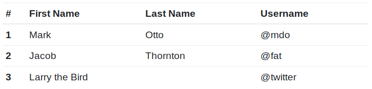
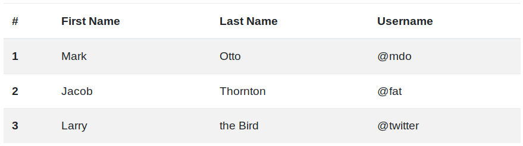
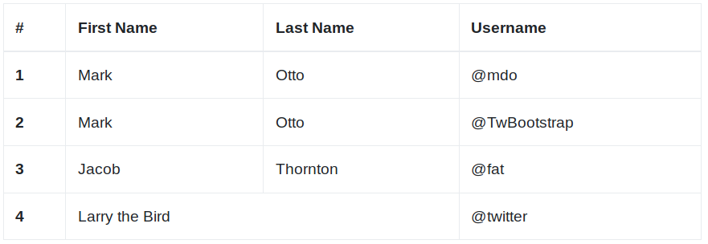
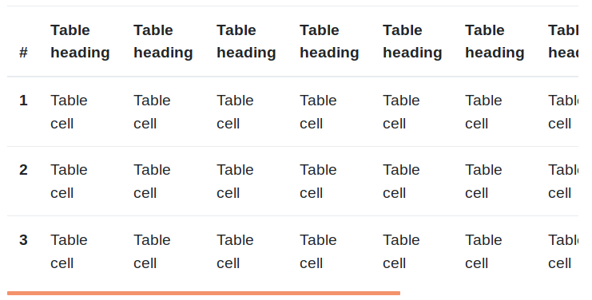

Tablas¶
Bootstrap también define una serie de clases para aplicar estilos sobre las tablas de HTML. La más básica es la clase .table:
1 2 3 | |
La cual configura los estilos de las tablas básicas de HTML para que adopten el siguiente aspecto:

En la tabla anterior las celdas de la primera fila estarían marcadas con "th" y el resto de celdas con "td".
Tablas pequeñas¶
Si queremos compactar el tamaño de la tabla para que deje un padding (o espaciado interior) inferior, podemos aplicar la clase .table-sm de la forma:
1 2 3 | |
Obteniendo:

Colores alternos¶
Si además aplicamos la clase .table-striped a nuestra tabla conseguiremos que las filas presenten colores alternos:
1 2 3 | |
Con lo que obtendríamos una tabla con el siguiente aspecto:

Tablas con bordes¶
También podemos dibujar un borde al rededor de la tabla añadiendo la clase .table-bordered, de la forma:
1 2 3 | |
Obteniendo el siguiente resultado:

Tablas Responsive¶
Bootstrap proporciona una forma de crear tablas responsive que se basa en crear un scroll horizontal para que se vean correctamente. Para que esto funcione simplemente tenemos que añadir la etiqueta .table-responsive a la propia tabla:
1 2 3 | |
Obteniendo:

Este efecto se aplicará únicamente sobre dispositivos pequeños (<576px) mientras que en el resto de dispositivos no se notará la diferencia. Si queremos que el punto de ruptura a partir del cual se aplique el responsive sobre la tabla sea un tamaño mayor podemos indicar un sufijo de tamaño sobre esta etiqueta, de la forma .table-responsive-*, donde "*" podrá ser sm, md, lg, xl o xxl.